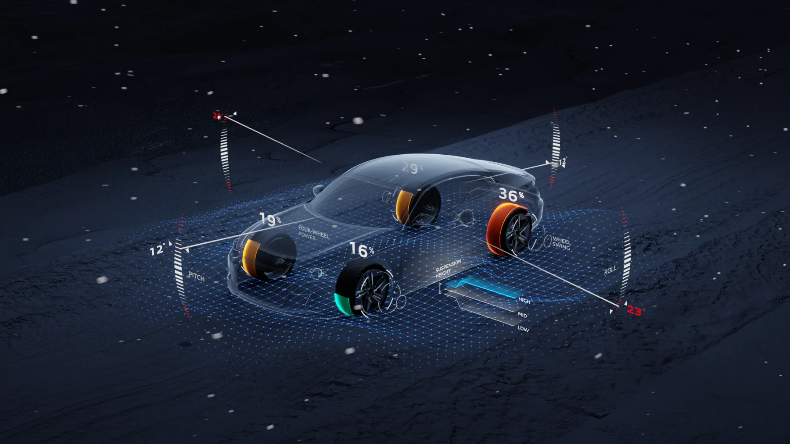
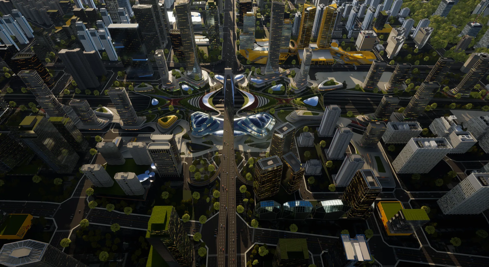
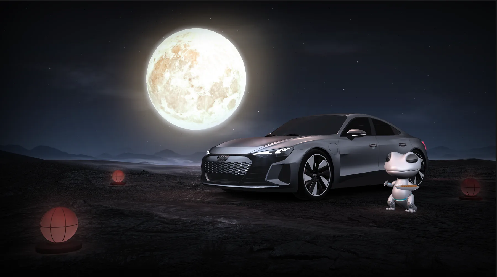
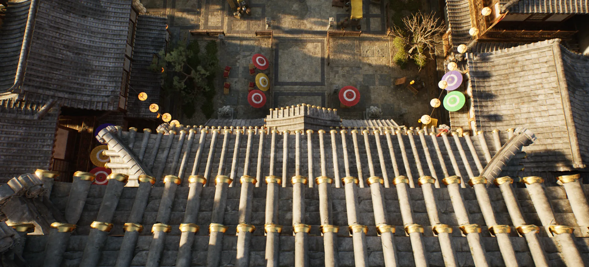

01SELECTED CASE ↗
INTELLIGENT
SPACE
智能空间 · 数字孪生 · 实时数据
将物理空间、设备数据和实时内容融为一体，探索空间感知、场景联动与沉浸式交互的新边界。
把空间、数据与实时视觉连接起来。
创造可感知、可交互、可生长的数字体验。
我是江汉，智能空间与实时视觉方向的创作者和团队负责人。
从游戏次世代美术、智慧城市与工业仿真，到量产车机 HMI，再到智能空间体验，我用 UE、3D 与数据驱动技术，把复杂系统转化为直观、有情绪的空间体验。
智能空间 · 数字孪生 · 实时数据
将物理空间、设备数据和实时内容融为一体，探索空间感知、场景联动与沉浸式交互的新边界。
量产车机 · 交互场景 · COCOS / 3D
UE 场景 · 环境叙事 · 视觉研发
沉浸式视觉 · 游戏环境 · 动态叙事
以场景氛围、镜头语言和实时特效建立完整的视觉体验，在艺术表达与运行效率之间取得平衡。




围绕智能空间开展实时内容、空间交互与视觉体验设计，让数字系统进入真实环境。
管理美术团队，主导深蓝 S05 / S07、奥迪 POC 与多家车企量产项目的视觉技术路线。
带领团队交付智慧城市、工业仿真项目，推动 Houdini、PCG、Cesium 与 GIS 数据流程。
从次世代资产制作出发，完成军工仿真、智慧城市和可视化项目的完整能力构建。
04 / CAPABILITIES